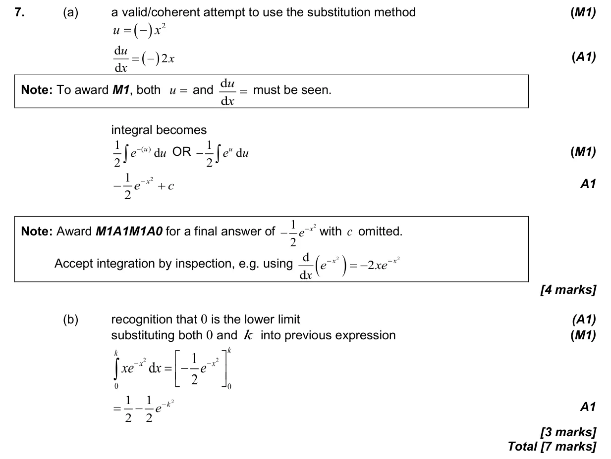

5.11 Further integration: standard integrals, inspection and substitution5.5 Integration introduction, areas between curve and x-axis
Question

Markscheme

7 marks - May P1 TZ2 - Mathematics: Applications and Interpretation HL